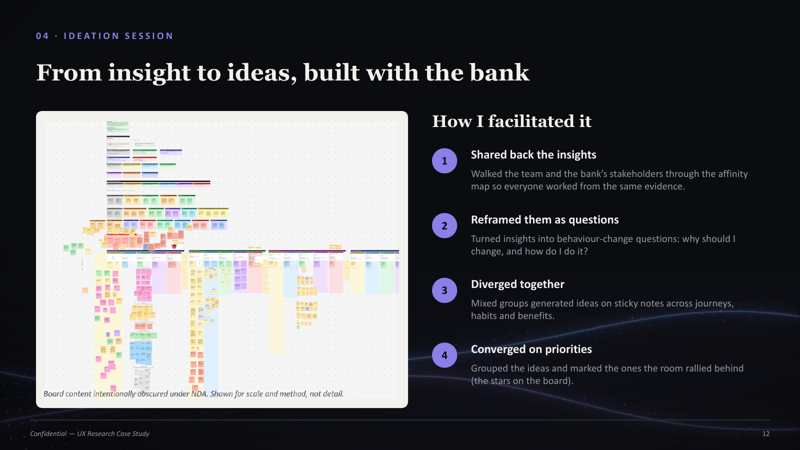

01
TERRITORY ONE
Ownership
Who takes responsibility for an API across its lifecycle?
- Roles and accountability
- Ownership handovers
- Support and maintenance
I investigated why teams rebuilt existing capabilities and what would make API reuse easier.
At a leading South African financial services organisation, I designed the interview protocol, led 9 of 16 stakeholder interviews and helped synthesise six themes into strategic recommendations.
Scope and evidence: Qualitative discovery under NDA; findings informed recommendations, not a measured production outcome.
The API Marketplace existed, but teams still relied on colleagues to find APIs. They also needed clear ownership, support and confidence that reuse would not slow delivery. When those conditions were unclear, rebuilding felt safer.
The issue tree organised the inquiry into four areas. These were questions to investigate, not confirmed findings.
Understanding the organisational conditions behind API ownership, collaboration, discovery and reuse.
Who takes responsibility for an API across its lifecycle?
What encourages teams to share, contribute or reuse?
How do teams coordinate across organisational boundaries?
What makes an existing API easy to find and safe to adopt?
These research territories helped frame recommendations for a more connected API community.
Research goal: Investigate how organisational structures, team behaviours and collaboration practices influence API ownership, discovery and reuse, and identify opportunities to improve the enterprise API ecosystem.
Led 9 stakeholder interviews within a seven-person design team.
Contributed to synthesis, identifying patterns that informed recommendations.
Contributed to planning, facilitation and synthesis across the team.
Client and sensitive organisational details are anonymised under NDA.
I began with participants’ roles and daily work, then explored behaviours, barriers and possible improvements. Scenario questions encouraged concrete examples rather than idealised answers.
Focus: role, API responsibilities and current discovery habits.
Objective: understand different teams’ experiences of the API ecosystem.
Why: establish context and trust before exploring problems.
Focus: discovery barriers, duplicated work and reasons APIs may not be trusted.
Objective: identify barriers to collaboration, discovery and reuse.
Why: recent examples reveal actual behaviours and workarounds.
Focus: scenarios involving API changes, ownership, governance and handoffs.
Objective: understand practical barriers and organisational readiness.
Why: scenarios show how teams respond when responsibilities or dependencies change.
Focus: knowledge-sharing, incentives and interest in a Community of Practice.
Objective: identify conditions that could support participation.
Why: reuse also depends on motivation, trust and relationships across teams.
Focus: desired future, improvement priorities, leadership and risks.
Objective: inform the CoP’s design, operating model and governance.
Why: practitioners described daily work; executives explored system-level change.
This sequence moved from context to behaviour, then to culture and future change without introducing a preferred solution too early.
The recommendation was to strengthen, not replace, the API Marketplace. The machine-to-organism metaphor shifted the focus from a fixed tool to a community that learns, adapts and shares responsibility.
A machine relies on tools and central control. An organism depends on trust, shared learning and teams adapting together.
Create a Community of Practice where API practitioners build shared identity, exchange experience and learn across teams.
Enable member-led questions, peer support, shared patterns and ways to find expertise and learn about APIs.
Keep clear standards and accountability, while giving members room to organise. Too much control limits participation; too little can weaken trust and quality.
I facilitated affinity mapping, grouping observations by behaviour to reveal recurring patterns and build a shared view of the ecosystem.
In ideation, the team used the emerging themes to explore community, shared identity, self-organisation and learning beyond a tool-led response.

The six themes pointed to a community that supports the existing platform through shared identity, peer learning and responsibility.
The design challenge was bigger than improving a platform: it was about how people connect, learn and take ownership.
Evidence boundary: This work was conducted under NDA. The case study shares the research approach and strategic direction without exposing the underlying research deck or sensitive organisational detail.